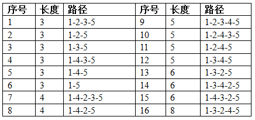

有 $n$ 个城市和 $m$ 条单向道路，城市编号为 $1 \sim n$。每条道路连接两个不同的城市，且任意两条道路要么起点不同要么终点不同，因此 $n$ 和 $m$ 满足 $m \le n(n-1)$。给定两个城市 $a$ 和 $b$，可以给 $a$ 到 $b$ 的所有简单路（所有城市最多经过一次，包括起点和终点）排序：先按长度从小到大排序，长度相同时按照字典序从小到大排序。你的任务是求出 $a$ 到 $b$ 的第 $k$ 短路。
输入第一行包含五个正整数 $n, m, k, a, b$。以下 $m$ 行每行三个整数 $u, v, l$，表示从城市 $u$ 到城市 $v$ 有一条长度为 $l$ 的单向道路。
$100\%$ 的数据满足：$2 \le n \le 50, 1 \le k \le 200$
如果 $a$ 到 $b$ 的简单路不足 $k$ 条，输出No，否则输出第 $k$ 短路：从城市 $a$ 开始依次输出每个到达的城市，直到城市 $b$，中间用减号 "-" 分割。
No
5 20 10 1 5 1 2 1 1 3 2 1 4 1 1 5 3 2 1 1 2 3 1 2 4 2 2 5 2 3 1 1 3 2 2 3 4 1 3 5 1 4 1 1 4 2 1 4 3 1 4 5 2 5 1 1 5 2 1 5 3 1 5 4 1
1-2-4-3-5
4 6 1 1 4 2 4 2 1 3 2 1 2 1 1 4 3 2 3 1 3 4 1
1-2-3-4
3 3 5 1 3 1 2 1 2 3 1 1 3 1
第一个例子有 $5$ 个城市，所有可能出现的道路均存在。从城市 $1$ 到城市 $5$ 一共有 $5$ 条简单路

 Comet OJ
Comet OJ